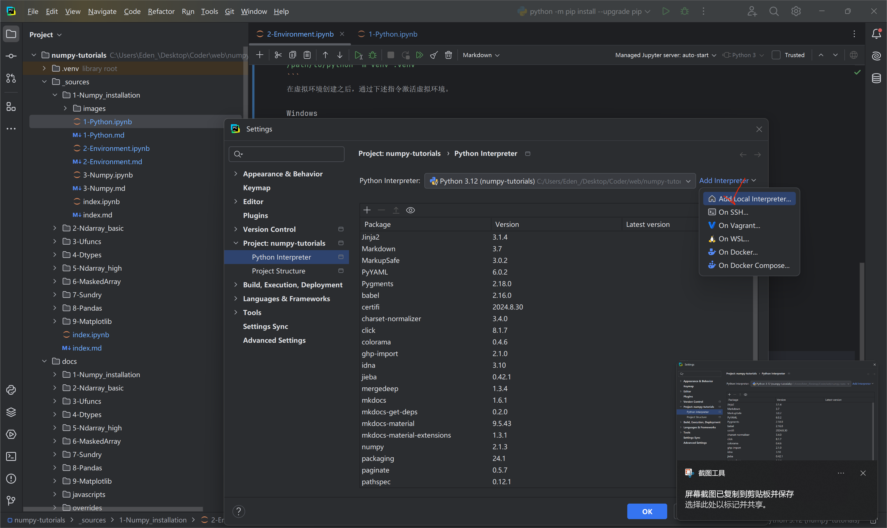
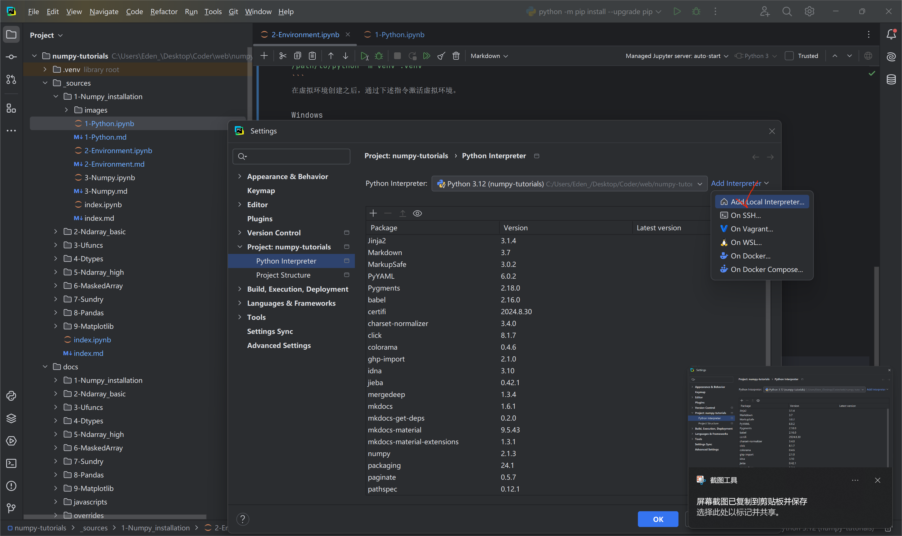
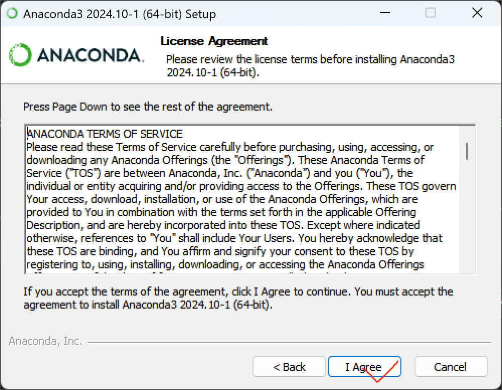
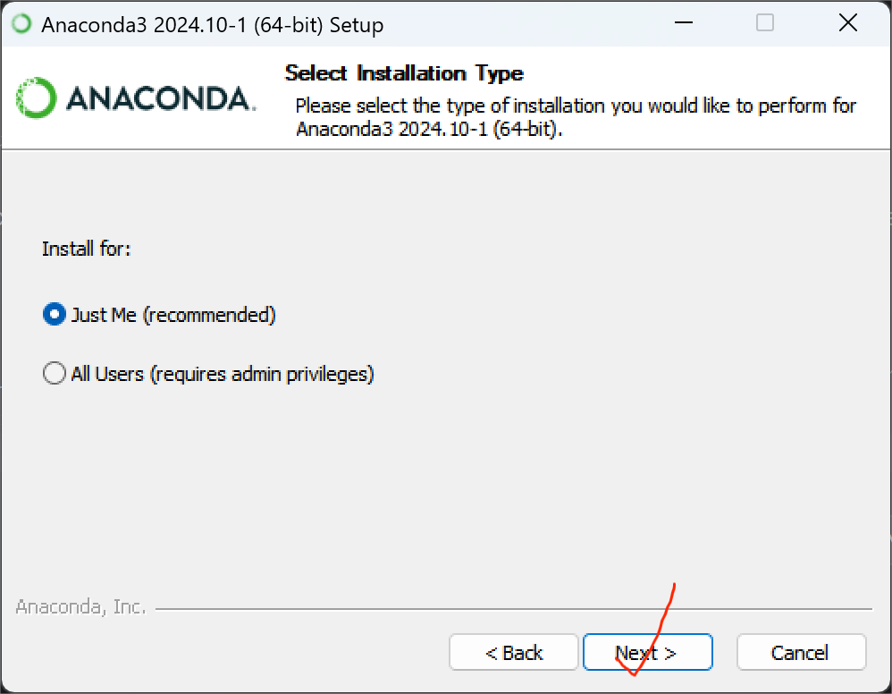
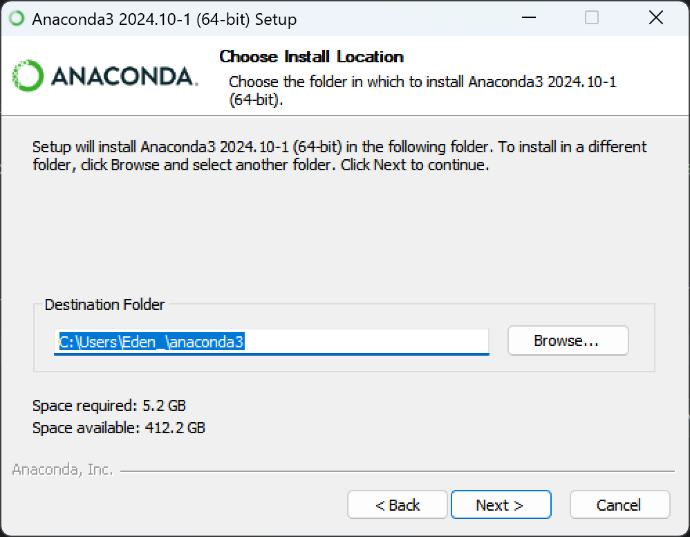
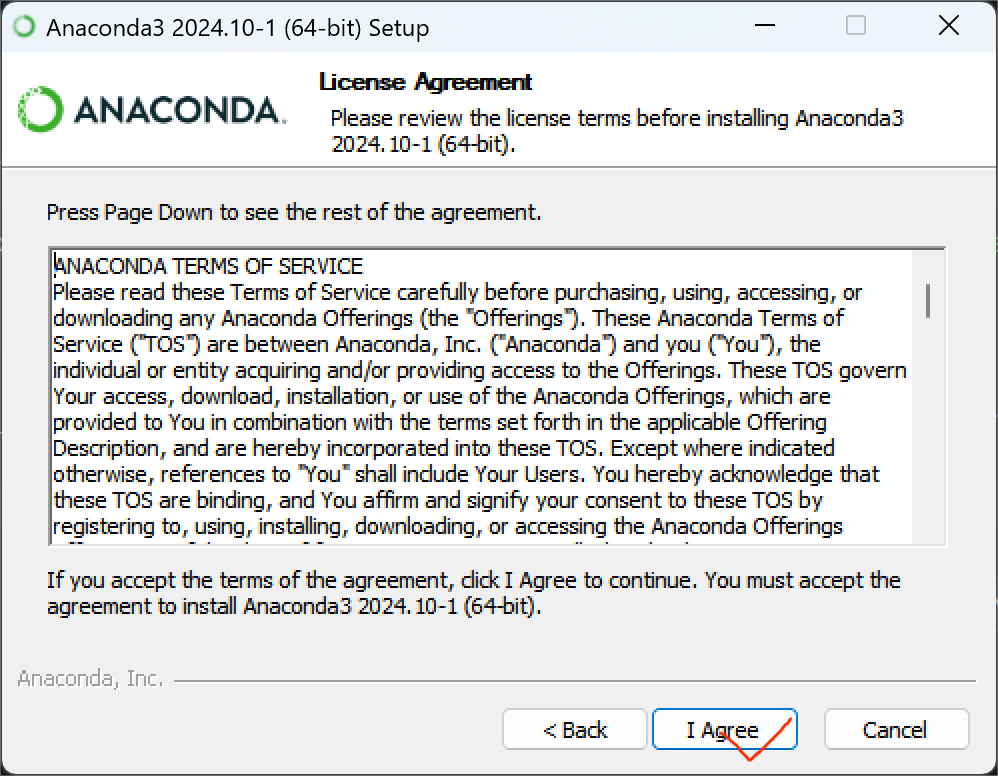
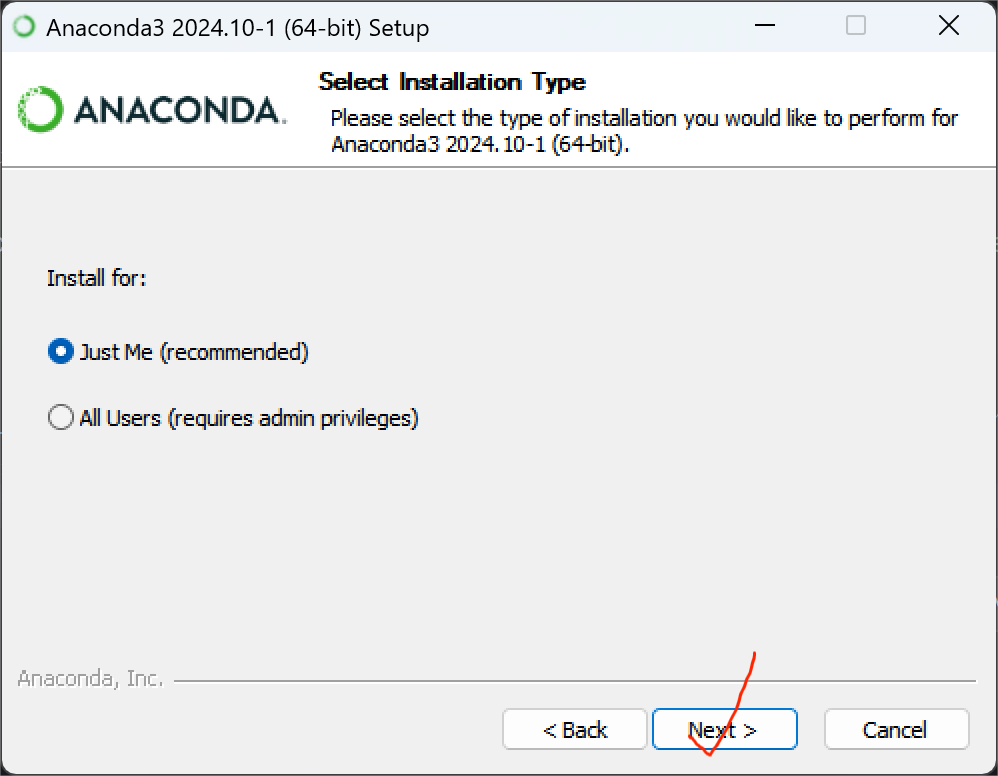
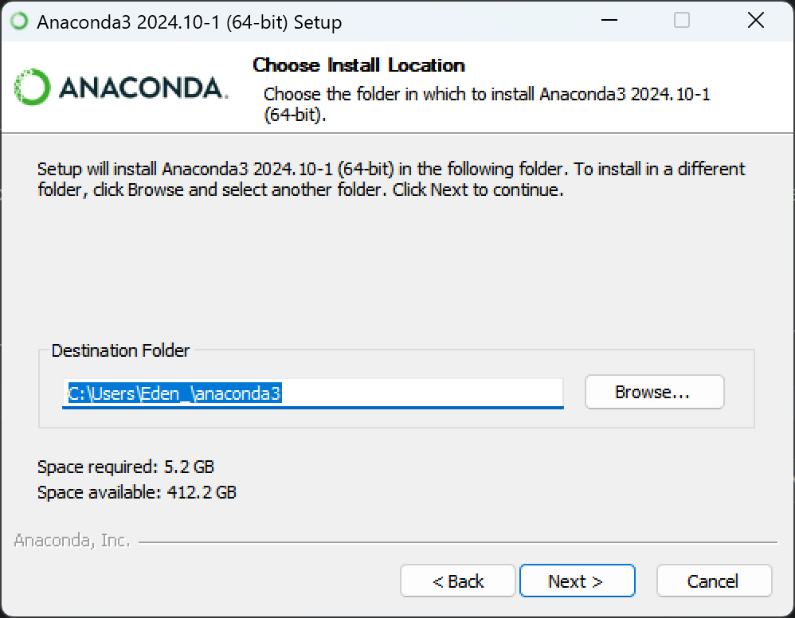
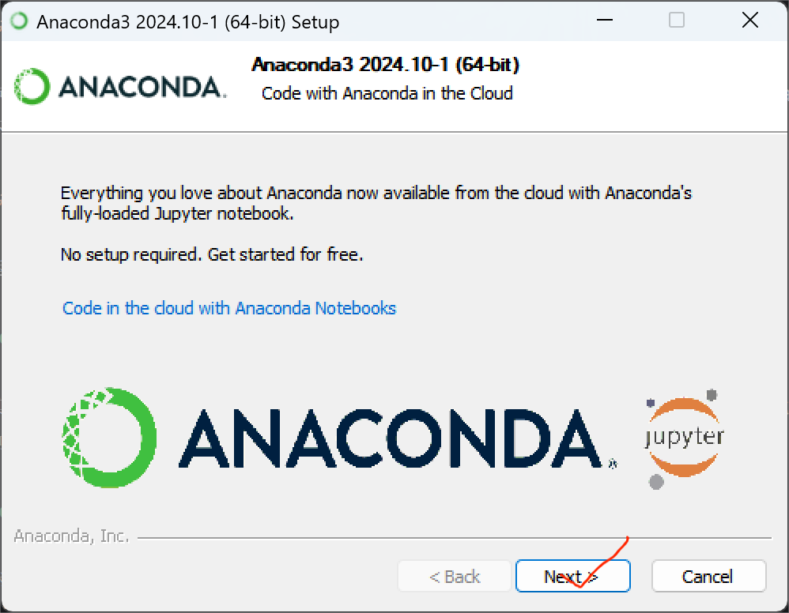
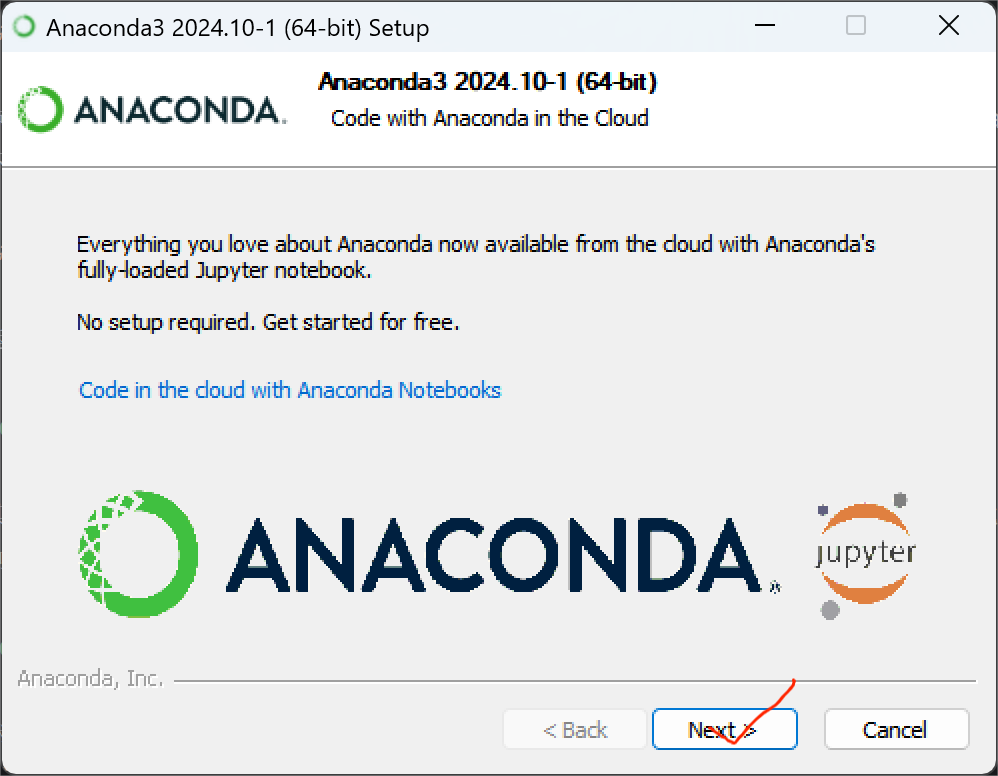

Part 2. Python 环境的配置
在这一节中,我将介绍 Python 环境的配置。 如果你的电脑上还没有 Python 并且想要最简单的安装方式， 我建议使用Anaconda， 它包含 Python、NumPy 和许多其他常用的科学计算和数据科学软件包。
现在有两种较为常用的下载软件包的方法，一种是使用pip，另一种则是使用conda。 pip 从 Python 的 PyPI 安装，而 conda 从其自己的渠道（通常是“默认”或“conda-forge”）安装。 PyPI 是迄今为止最大的软件包集合，但是，大多数流行的软件包都可以在 conda 中找到。
课程视频
通过pip安装
用 pip 管理 Python 环境的常用配置是: pip + 虚拟环境 + requirements.txt
安装pip
在我们默认安装的 Python 中，如果是 Windows 系统，其通常自带 pip 软件包。 我们可以通过命令
pip --version
来检验 pip 是否安装。如果 pip 在系统中已经安装，则会得到以下结果
pip X.X.X from /path/to/site-packages (python X.X)
如果 pip 未安装，则可以通过以下命令之一下载get-pip.py
curl https://bootstrap.pypa.io/get-pip.py -o get-pip.py
wget https://bootstrap.pypa.io/get-pip.py
然后运行以下命令安装 pip
python get-pip.py
此外，我们可以通过下述命令更新 pip 至最新版本
python -m pip install --upgrade pip
配置虚拟环境
可以通过命令行或者 PyCharm 图形化界面配置虚拟环境。
命令行配置
我们可以运行下述指令创建虚拟环境（通常在项目根目录中）。
python -m venv .venv
如果想要指定 Python 版本而不是使用默认的 Python 版本， 可以运行下述指令指定。
py -x.x -m venv .venv
或者
/path/to/python -m venv .venv
在虚拟环境创建之后，通过下述指令激活虚拟环境。
Windows
.venv\Scripts\activate
Linux/MacOS
source .venv/bin/activate
在激活虚拟环境之后，我们就可以通过 pip 等工具管理虚拟环境中的软件包了。 例如，安装 Numpy:
pip install numpy
PyCharm配置
打开 PyCharm ，进入 Settings-Project-Python Interpreter， 点击 add Interpreter 并选择 new Interpreter，选择添加虚拟环境即可。

 



在安装完成之后，PyCharm 自带的 Terminal 中会自动激活该虚拟环境。 如果没有激活，重新启动即可。
依赖记录
在 pip 安装的虚拟环境中，我们通常使用 requirements.txt 管理依赖。
在完成项目的软件包安装之后，我们可以执行下述命令导出配置。
pip freeze > requirements.txt
如果想要重新建立一个虚拟环境并且回复软件包安装的话，只需要运行
pip install -r requirements.txt
就可以了。
通过conda安装
用 conda 管理 Python 环境的常用配置是: conda + conda环境 + environment.yaml
安装 Anaconda
点击这里跳转 Anaconda 的下载界面。 下载并安装对应系统的 Anaconda ，这里只演示 Windows 系统下的安装。 （除了一个添加路径之外一直点 Yes 就可以了）
 





 

配置 Conda 环境
可以通过命令行或者 PyCharm 图形化界面配置 Conda 环境。
命令行配置
运行下述指令创建 Conda 环境。
conda create --name <environment_name> python=<python_version>
其中 <environment_name> 填入环境名称, <python_version> 填入想要创建的 Python 版本。
例如
conda create --name conda_env python=3.12
然后运行指令激活 Conda 环境
conda activate <environment_name>
例如
conda activate conda_env
PyCharm配置
与虚拟环境相同， 只需要将虚拟环境的选项换成 Conda 环境即可。
依赖记录
在 Conda 环境中，我们通常使用 environment.yml 管理依赖。
在完成项目的软件包安装之后，我们可以执行下述命令导出配置。
conda env export > environment.yml
如果想要重新建立一个虚拟环境并且回复软件包安装的话，只需要运行
conda env create -f environment.yml
就可以了。